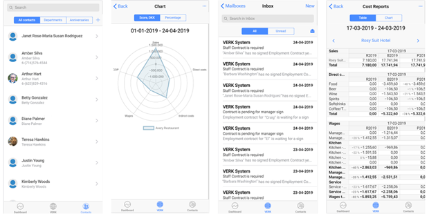
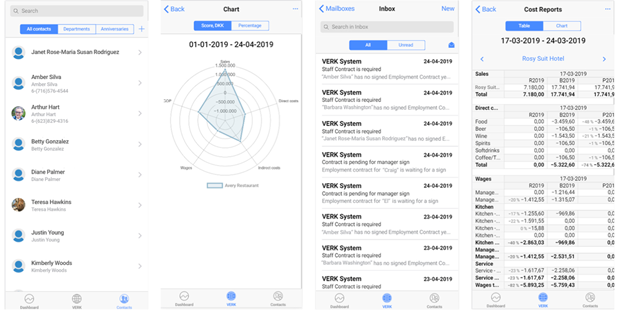
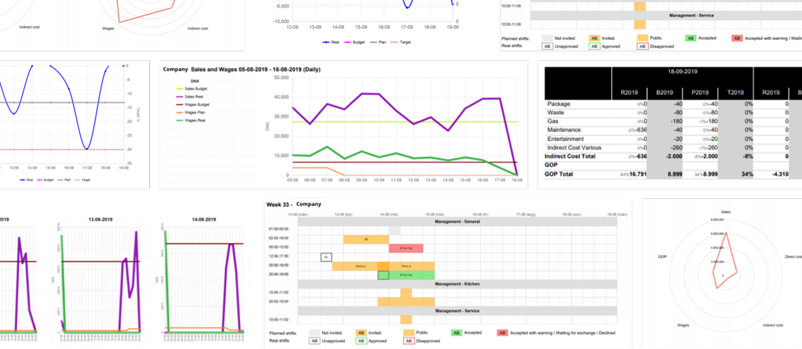

Business Case: Strategic Workforce Planning Increased Budget Forecasting Efficiency by 100% for Hotel Chain
December 3, 2019
Business optimization and automation are often ignored as more traditional business management tasks become a priority.
Is this the right way to approach modern business?
In this article, we will present a highly effective business optimization strategy and show it in action through a successful business case. The business case is based on our experience of developing a workforce management system for a large hotel and restaurant chain.
Our client has decreased its workforce budget, eliminated overtime abuse, reduced fines through easy labor law compliance, and increased employee productivity through transparent shift tracking.Get In Touch
What Is Business Optimization and Why Your Business Needs It to Survive The era of full automation is already here, but keeping up with new ways to improve your business processes is not an easy task. Things change constantly, and some aspects of business have already evolved into fuss-free, fully automated, self-managed systems. More will evolve soon. That encourages business owners to take immediate action and inspect their business processes under a microscope to see if there is something worth investing in and improving.
As a rule, there are multiple things in dire need of reevaluating, especially if the business has been up and running for some time and many of its aspects are built on what now can be considered old-fashioned and suboptimal.
To their surprise, businesses discover that their processes are plagued with obsolete or outdated components. Tracking systems, if any, don’t gather necessary statistics, don’t generate reports, and leave plenty of room for overtime abuse. Employees are overpaid or underpaid due to poor time tracking and shift planning. Budget forecasting is not efficient since there is not enough aggregated data on the successes and failures of the company in the previous period.
All these little things together can undoubtedly lead to payroll leakage and incorrect budget planning, which means only one thing: losing money where it can be saved and even multiplied.
If any of this sounds familiar, we want to encourage you with this:
You can decrease your expenses and increase your profit by improving one aspect of your business.
Here’s how.
Strategic Workforce Planning (SWP) is an analytical process that keeps your business goals balanced, both short-term and long-term. It gives you a way to achieve goals for your employees, their key skills, and their work time, as well as your income sources and expenses.
You can read more on reducing your labor budget by planning your workforce here.
SWP has become essential to businesses of various sizes and areas of expertise. However big or small your business is, whatever you do, you are bound to eventually run into the same problems all business owners encounter.
When you don’t have any data for your wages in the previous financial year, it is always a mystery what they are going to be this year. It becomes impossible to predict wages and plan your budget correctly, which inevitably leads to losing money for no good reason.
In peak seasons, many businesses hire new people for a short period to deal with the increased workload. As a rule, these people are considered a special type of employees and have different wage rates than regular employees. Without a proper system that can deal with wage customization, it becomes the finance department’s headache to individually and manually manage salaries for short-term workers, trainees, freelancers, and various other staff.
A rigid shift schedule often results in employees changing it themselves, working a shorter shift one day and a longer one the next day, switching shifts with their colleagues, or adjusting their time. All these actions result in management hell. Nobody knows how many hours an employee worked each day, if they filled in for somebody else, or if someone else filled in for them.
Ever-changing labor laws often wreak havoc on wage calculations. Failing to comply leads to hefty fines that further bloat your workforce budget. Implementing new regulations is a tedious process that is often done manually. That is not the best approach as it’s prone to human error and is highly inefficient.
Okay, workforce planning is no easy task. It is multi-faceted, complex, and even confusing at times. It seems like implementing a workforce planning strategy may not even be worth it. But that’s entirely wrong.
Every business needs strategic workforce planning, and if you are in charge of a large enterprise with more than 1,000 employees, you need it that much more. The larger the head count, the more room for error when calculating payroll, planning shifts, and forecasting your labor budget.
In fact, labor accounts for more than half of all business expenses, and it continues to increase. If there is a need to decrease business spending, labor should absolutely be the first aspect to optimize. Having developed a labor planning system, we have seen firsthand how strategic workforce planning—implemented as a multi-platform system—can transform a critical, labor-intensive business problem into a simple, fast process.
Our client, a large hotel and restaurant chain on the Faroe Islands, encountered all the typical workforce planning problems—payroll leakage through overtime abuse, poor shift planning, and faulty workforce forecasting.
The first step was to develop an effective and simple data collection system. Data collection is the cornerstone of any planning. And in the case of a large company with a lot of employees, it needs to be simple as well as fast.
What did we track for effective workforce planning?
The system keeps track of employee wage history, shifts worked, promotions, time off, and sick days. The data is not only there but is also easy to read and quick to get to. This information is highly useful, not only for managing employees within a department but also on a larger scale to identify the overall workload, money spent on wages, and so on.
Out-of-the-box shift tracking solutions work great for small companies that do not have a lot of diversity in work hours or a large employee head count. Large companies require custom shift planning solutions—and we have delivered just that. Shifts are registered in the system and can later be used to create reports.
Employees working overtime may seem like a positive thing since more work gets done during the day. But when overtime hours are not calculated correctly, the company suffers losses by paying extra for those hours.
Whether you have an in-house specialist, a freelancer working on a project, a part-timer, a trainee, or maybe someone you hired in a peak season, the system will apply custom wage calculation rules to each of them. The system also specifies fixed, hourly, and overtime rates to provide further control over each employee and the entire workforce as a result.
The data is then used to generate comprehensive reports to track which areas of your finance management need your attention more than others. The reports not only include the data but also various visuals such as spider charts that make the reporting process easier.

But the most important feature is real-time reports.
Introducing a new system into your business is one thing, but encouraging employees to use it regularly is a problem of its own. We addressed this problem by making the system available on any device. Employees can track their work hours, and managers can easily access the data when an employee is working remotely.
The introduction of a workforce planning system into our client’s workflow outperformed all our expectations. Accurate data tracking increased the accuracy of workforce financial forecasting by 100%. A custom shift tracking system significantly decreased overtime costs while providing a fair wage for employees.
Tracking more than 1,500 employees in one system saved hours for the finance and HR departments and increased work efficiency through the automation of complex tasks that would usually take several days, if not weeks, to complete.
Want to learn more about how we have implemented the system? Read about it here.
Business owners should work smarter, not harder. Planning your expenses in advance using predictive workforce analytics is the key to business growth. Labor is the number one expense for any business, especially large businesses. Implementing strategic workforce planning is an effective way to decrease costs and increase productivity.
Is this the right way to approach modern business?
In this article, we will present a highly effective business optimization strategy and show it in action through a successful business case. The business case is based on our experience of developing a workforce management system for a large hotel and restaurant chain.
Our client has decreased its workforce budget, eliminated overtime abuse, reduced fines through easy labor law compliance, and increased employee productivity through transparent shift tracking.
Looking for a software development team?
Describe your project and we will come back with a time and cost estimation
As a rule, there are multiple things in dire need of reevaluating, especially if the business has been up and running for some time and many of its aspects are built on what now can be considered old-fashioned and suboptimal.
To their surprise, businesses discover that their processes are plagued with obsolete or outdated components. Tracking systems, if any, don’t gather necessary statistics, don’t generate reports, and leave plenty of room for overtime abuse. Employees are overpaid or underpaid due to poor time tracking and shift planning. Budget forecasting is not efficient since there is not enough aggregated data on the successes and failures of the company in the previous period.
All these little things together can undoubtedly lead to payroll leakage and incorrect budget planning, which means only one thing: losing money where it can be saved and even multiplied.
If any of this sounds familiar, we want to encourage you with this:
You can decrease your expenses and increase your profit by improving one aspect of your business.
Here’s how.
Your New Favorite Acronym – SWP
Strategic Workforce Planning (SWP) is an analytical process that keeps your business goals balanced, both short-term and long-term. It gives you a way to achieve goals for your employees, their key skills, and their work time, as well as your income sources and expenses. You can read more on reducing your labor budget by planning your workforce here.
SWP has become essential to businesses of various sizes and areas of expertise. However big or small your business is, whatever you do, you are bound to eventually run into the same problems all business owners encounter.
SWP Problem No. 1: Where’s the Data?
When you don’t have any data for your wages in the previous financial year, it is always a mystery what they are going to be this year. It becomes impossible to predict wages and plan your budget correctly, which inevitably leads to losing money for no good reason.
SWP Problem No. 2: Variety of Wages
In peak seasons, many businesses hire new people for a short period to deal with the increased workload. As a rule, these people are considered a special type of employees and have different wage rates than regular employees. Without a proper system that can deal with wage customization, it becomes the finance department’s headache to individually and manually manage salaries for short-term workers, trainees, freelancers, and various other staff.
SWP Problem No. 3: Messy Shift Tracking
A rigid shift schedule often results in employees changing it themselves, working a shorter shift one day and a longer one the next day, switching shifts with their colleagues, or adjusting their time. All these actions result in management hell. Nobody knows how many hours an employee worked each day, if they filled in for somebody else, or if someone else filled in for them.
SWP Problem No. 4: Labor Compliance
Ever-changing labor laws often wreak havoc on wage calculations. Failing to comply leads to hefty fines that further bloat your workforce budget. Implementing new regulations is a tedious process that is often done manually. That is not the best approach as it’s prone to human error and is highly inefficient.
How to Implement Strategic Workforce Planning into YOUR Business
Okay, workforce planning is no easy task. It is multi-faceted, complex, and even confusing at times. It seems like implementing a workforce planning strategy may not even be worth it. But that’s entirely wrong.Every business needs strategic workforce planning, and if you are in charge of a large enterprise with more than 1,000 employees, you need it that much more. The larger the head count, the more room for error when calculating payroll, planning shifts, and forecasting your labor budget.
In fact, labor accounts for more than half of all business expenses, and it continues to increase. If there is a need to decrease business spending, labor should absolutely be the first aspect to optimize. Having developed a labor planning system, we have seen firsthand how strategic workforce planning—implemented as a multi-platform system—can transform a critical, labor-intensive business problem into a simple, fast process.
Business Case: SWP for a Hotel and Restaurant Chain
Our client, a large hotel and restaurant chain on the Faroe Islands, encountered all the typical workforce planning problems—payroll leakage through overtime abuse, poor shift planning, and faulty workforce forecasting.The first step was to develop an effective and simple data collection system. Data collection is the cornerstone of any planning. And in the case of a large company with a lot of employees, it needs to be simple as well as fast.
What did we track for effective workforce planning?
Employee Work History
The system keeps track of employee wage history, shifts worked, promotions, time off, and sick days. The data is not only there but is also easy to read and quick to get to. This information is highly useful, not only for managing employees within a department but also on a larger scale to identify the overall workload, money spent on wages, and so on.
Shifts
Out-of-the-box shift tracking solutions work great for small companies that do not have a lot of diversity in work hours or a large employee head count. Large companies require custom shift planning solutions—and we have delivered just that. Shifts are registered in the system and can later be used to create reports.
Overtime Tracking
Employees working overtime may seem like a positive thing since more work gets done during the day. But when overtime hours are not calculated correctly, the company suffers losses by paying extra for those hours.
Custom Wage Scales
Whether you have an in-house specialist, a freelancer working on a project, a part-timer, a trainee, or maybe someone you hired in a peak season, the system will apply custom wage calculation rules to each of them. The system also specifies fixed, hourly, and overtime rates to provide further control over each employee and the entire workforce as a result.
Reports, Planning, and Forecasting
The data is then used to generate comprehensive reports to track which areas of your finance management need your attention more than others. The reports not only include the data but also various visuals such as spider charts that make the reporting process easier.
But the most important feature is real-time reports.
Easy and Quick Reporting
More often than not, reports take several days to put together, which is not ideal in a business setting. Having all the necessary data at your fingertips significantly speeds up the process. We have implemented quick and easy-to-compile reports into the system, making it easier than ever for you to keep track of finances. You can compile a financial report in a matter of minutes, which saves you time for more important tasks.

Accessibility
Introducing a new system into your business is one thing, but encouraging employees to use it regularly is a problem of its own. We addressed this problem by making the system available on any device. Employees can track their work hours, and managers can easily access the data when an employee is working remotely.
Strategic Workforce Planning in Practice
The introduction of a workforce planning system into our client’s workflow outperformed all our expectations. Accurate data tracking increased the accuracy of workforce financial forecasting by 100%. A custom shift tracking system significantly decreased overtime costs while providing a fair wage for employees.Tracking more than 1,500 employees in one system saved hours for the finance and HR departments and increased work efficiency through the automation of complex tasks that would usually take several days, if not weeks, to complete.
Want to learn more about how we have implemented the system? Read about it here.